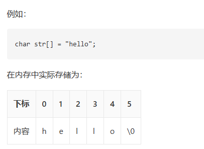

字符串 (String)
字符串就如同由字符穿成的一串珍珠。
在文海中寻找特征，就如同在这串珍珠中寻找特定的花纹。
所有依赖代码位于 String\src 目录下。
Baseline 任务 1: 字符串的基本实现
字符串（String）是由零个或多个字符组成的有限序列。
我们可以将字符串类比为一段连续存放的文字，虽然在很多高级语言中它已经被封装成基本的数据类型或者对象，但从存储结构上看，字符串本质上是一个元素类型为字符的线性表。最常见的存储形式就是顺序存储（即字符数组）。
如图所示，由于字符串中的字符在内存中是连续存取的，我们可以使用下标来快速访问对应的字符。

字符串的基本操作
字符串的常用操作如表所示，具体的方法名需要根据所使用的编程语言来确定。在此，我们以常见的求长度、拼接、求子串等命名为例（即 C++ 中<string>库中对应方法）。
| 方法 | 描述 | 时间复杂度 |
|---|---|---|
length() | 获取字符串长度 | $O(1)$ |
append() | 在字符串末尾拼接另一个字符串 | $O(m)$ |
substr() | 从指定位置截取指定长度的子串 | $O(k)$ |
在 C++ 语言中，字符串的数据结构已经被封装在 <string> 库中，我们可以直接使用它来创建和操作字符串。以下是一个简单的示例：
/* 初始化字符串 */
string str1 = "Hello";
string str2 = " World";
/* 字符串拼接 */
string str3 = str1 + str2; // "Hello World"
str1.append("!"); // "Hello!"
/* 访问特定字符 */
char c = str3[0]; // 'H'
/* 截取子串 */
string sub = str3.substr(0, 5); // "Hello"
/* 获取长度 */
int len = str3.length();
/* 字符串比较 */
bool isEqual = (str1 == str3);注：上述代码需要包含头文件 #include <string>
实际上<string>库中的字符串包含的功能远超过上述基本操作，大家可以参考 C++ 官方文档来了解更多细节：https://en.cppreference.com/w/cpp/string/basic_string 。
字符串的实现
为了深入了解字符串的运行机制，我们可以尝试自己实现一个顺序存储的字符串类。
基于动态数组的字符串实现
最直接的实现方式就是通过动态维护一个字符数组及其长度（以及容量以避免频繁扩容）。
/* 基于动态数组实现的字符串 */
class MyString {
private:
char* data; // 字符数组指针
int len; // 字符串长度
public:
MyString() {
data = new char[1];
data[0] = '\0';
len = 0;
}
MyString(const char* str) {
len = 0;
while (str[len] != '\0') len++;
data = new char[len + 1];
for (int i = 0; i < len; i++) {
data[i] = str[i];
}
data[len] = '\0';
}
~MyString() {
delete[] data;
}
/* 获取字符串长度 */
int length() {
return len;
}
/* 截取子串 */
MyString substr(int pos, int n) {
if (pos < 0 || pos >= len)
throw out_of_range("越界");
int subLen = (pos + n > len) ? (len - pos) : n;
char* temp = new char[subLen + 1];
for (int i = 0; i < subLen; i++) {
temp[i] = data[pos + i];
}
temp[subLen] = '\0';
MyString result(temp);
delete[] temp;
return result;
}
};任务内容
- 完成顺序存储的字符串类的实现，要求可以通过给出的测试程序（你在这一部分不可以修改测试程序，需自己基于上述框架补充拼接、查找等基本方法）。
- 参考 C++ 标准库中的
<string>实现，在你的字符串类上添加更多的功能，如查找特定子串、替换子串等（五个更多的功能即可），并比较你的字符串在频繁拼接时与<string>库的性能差异。 - 分析动态扩容策略对字符串连接（如连续拼接百万次）性能的影响。
你提交的材料中这部分内容需要包含：
- 三个小任务分别的代码（注意：代码的文件结构和注释也是评分的一部分）
- 对你程序和结果的分析（注：分析需要能够体现你对这些功能的理解，不能仅仅是简单的结果描述）
- 你对性能差异的分析（注：分析需要能够体现你对数组扩容等机制的理解，不能仅仅是简单的结果描述）
Baseline 任务 2: 字符串的模式匹配
字符串在日常中的最核心操作就是模式匹配（Pattern Matching）：即在主串中寻找是否出现了给定的子串（模式串），并返回其位置。
1. 朴素模式匹配算法
朴素算法使用双指针，逐个字符向后比对。如果发现不匹配，主串退回到上一次比对起点的下一个字符，模式串退回到开头。 如图所示，每次发现失配，都“笨拙”地仅仅向右移动一位重新开始。
/* 朴素模式匹配算法 */
int naiveMatch(const string& text, const string& pattern) {
int n = text.length(), m = pattern.length();
for (int i = 0; i <= n - m; i++) {
int j = 0;
while (j < m && text[i + j] == pattern[j]) {
j++;
}
if (j == m) return i; // 匹配成功，返回起点
}
return -1; // 匹配失败
}2. KMP 算法
KMP 算法（Knuth-Morris-Pratt Algorithm）消除了主串指针的回溯。它通过对模式串的分析，得到了一个 next 数组（或称为失败函数），指示在发生失配时，模式串可以向右滑动的最大安全距离，从而保证主串指针只需一直向前移动。
这个视频可以帮助同学们直观理解：https://www.bilibili.com/video/BV1AY4y157yL
KMP 算法的实现核心在于 next 数组的求解：
/* 求解 next 数组的简易实现 */
vector<int> getNext(const string& pattern) {
int m = pattern.length();
vector<int> next(m, 0);
int head = 0;
for (int tail = 1; tail < m; tail++) {
while (head > 0 && pattern[head] != pattern[tail]) {
head = next[head - 1];
}
if (pattern[head] == pattern[tail]) {
head++;
}
next[tail] = head;
}
return next;
}任务内容
为了更好地理解模式匹配，本练习分为了三个递进的步骤，建议按顺序完成：
- Step 1. 分析与测试朴素算法：构造极端的测试用例文本（例如主串是由大量重复字符凑成，末尾才失配），在给定的
test_match.cpp中测试并记录朴素算法在最坏情况下的耗时和表现。 - Step 2. 基础 KMP 算法的实现：在
match.cpp中实现完整的 KMP 模式匹配算法（可直接调用前置写好的getNext函数）。然后使用在 Step 1 中构造的极端用例，对比它与朴素算法在性能上的巨大差异。 - Step 3. nextval 数组深度优化：针对原始
next数组在连续相同字符时依然会多余比较的缺陷，实现优化的nextval求解算法。自己设计测试样例结合nextval运行终极版的 KMP 匹配，观察其具体区别和常数级性能提升。
你提交的材料中这部分内容需要包含：
- 三个小任务分别的代码（注意：代码的文件结构和注释也是评分的一部分）
- 对你程序和结果的分析（注：分析需要能够体现你对这些模式匹配算法过程的理解，不能仅仅是简单的结果描述）
- 你对性能差异的分析（注：分析需要能够体现你对时间和空间复杂度的理解，不能仅仅是简单的结果描述）